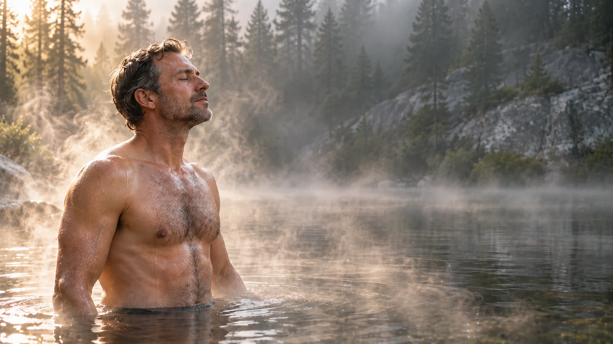
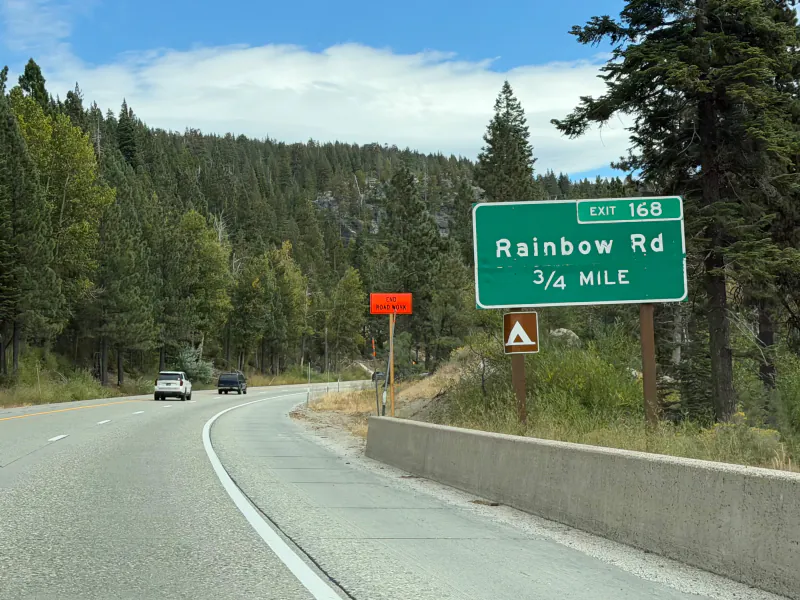
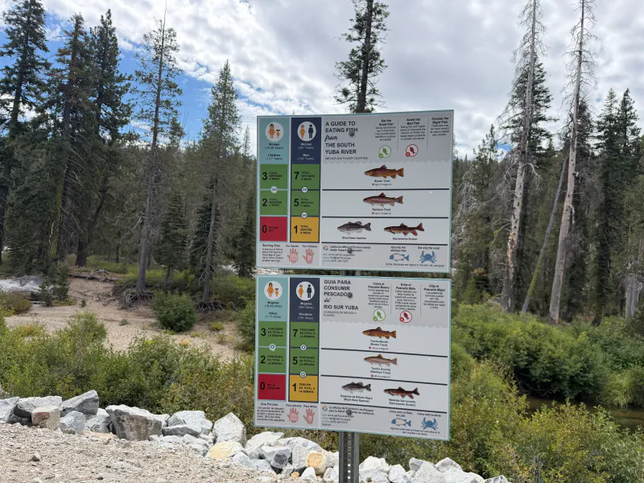

01
The gate
Rainbow Road is a couple of minutes off I-80. A private gate, then paved road down to the cabin. No dirt track, no 4WD needed in summer and fall.

Placer County, California · I-80, Exit 168
Yours for a day or 24 hours. An hour and a half from Sacramento, fifty minutes from Reno.
Your day here
What the day looks like once you have turned off at Exit 168.
01
Rainbow Road is a couple of minutes off I-80. A private gate, then paved road down to the cabin. No dirt track, no 4WD needed in summer and fall.
02
The sauna runs on wood. Light the stove and let the stones heat while you unpack. Two tiers of benches, and a changing room with a sofa to cool down in.
03
From the deck, wooden steps go straight into a quiet pool of the South Yuba. Clear snowmelt, granite boulders, nobody else in the water. Hot, cold, again.
04
A cabin with a table for six, a foosball table, two decks with picnic benches and grills. Staying the night? You fall asleep to the river.
Why here
What people put up with at public swimming holes and shared rentals, and how it goes at Exit 168.
The usual
At Exit 168
Parking full by 9 a.m., tickets, tow trucks.
Your own gate. Arrive when you like.
Forty-five minutes down a canyon trail, granite too hot for bare feet.
Wooden steps from the deck into the water.
A ninety-minute sauna slot shared with strangers.
The sauna is yours all day. As many rounds as you want.
No fires anywhere from late June.
The wood stove in the sauna is your fire.
A house that sleeps sixteen, a shared lake beach, neighbours on the next deck.
One cabin, one sauna, one group. 168 acres around you.
The place
What is actually here, as photographed in September 2026.
Sleeping arrangements, bathrooms, water and the maximum group size are confirmed by the host for your dates. Ask when you check them.
Where
Sierra Nevada, between Cisco Grove and Kingvale, about ten miles below Donner Summit.

Drive times are for a dry road with no traffic. Exact directions come with your confirmation.
The land
The cabin and the sauna are what you book. The forest and the river around them are what you make of them. Say what you have in mind when you check dates, and the host will confirm what works.

The South Yuba advisory lists brown trout and rainbow trout for this river. It also says how much of each is safe to eat.
As it is
The cabin is simple: wood walls, a big table, a good sofa. The sauna is real and burns real wood. The river is the reason to come.
Before you drive up
The things people wish a listing had told them.
Cabin + sauna + river
Prices are for the place, not per person. One group at a time. River season is July to October; other months, ask.
The host confirms dates, group size and terms before you pay anything. Nothing is charged on this site.
Questions
Straight answers to what people ask before they book a place like this.
The dining table seats six and the sauna takes a group. For beds and the maximum for your date, ask when you check dates. The host confirms before anything is paid.
Not in summer and fall: the road is paved from the gate. In winter, I-80 chain controls start at Kingvale, a few miles east, and winter dates are by arrangement.
Count on neither. Coverage nearby is patchy. Share the address and your plan with someone before you drive up.
The pool below the deck is quiet in summer, but it is a mountain river: cold, with current under calm water. Life jackets on kids, and no swimming during spring runoff, May to early July.
No open campfires in fire season, late June to October. The sauna's wood stove is the fire you get, and there are grills on the deck.
Ask. Tell us about the dog when you send your dates.
The exit is minutes away, so near the gate, yes. How much carries down to the cabin and the water depends on the wind and the river. Ask, and you will get a straight answer.
Send your dates and group size through the form. The host replies with availability, capacity and terms. Nothing is charged on this site; you pay only after you have confirmed everything with the host.
Fishing, yes, with a California licence. Riding and camping on the land are arranged with the host, so say what you have in mind. For dirt bikes and quads: on private land with the owner's permission you do not need a green or red sticker, but California still requires a spark arrester on forest land and Placer County sets noise limits, so bring quiet pipes.
Check your dates
No charge, no card. Your dates go to the host by email; the reply covers availability, group size and terms.
Your request is written out here and goes to the host by email. The reply covers the dates that are free, how many people the place takes on that date, and the terms. You are not booked until the host confirms.
The host's email address is not published on this page yet, so for now the form writes your request out for you to send yourself.